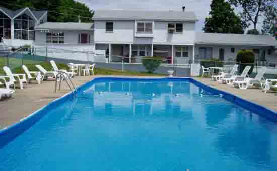

Travel to Lake George Travel to Lake George |
Home >> Things to do >> Lodging
The Georgian Resort and Conference Center384 Canada Street, Lake George, NY 12845http://www.georgianresort.com Georgian Resort in Lake George offers stunning accommodations with lakeview suites having hot tubs Jacuzzis. Enjoy a beautiful view of Lake George from our Heated Swimming Pool and have water fun activities with kayaks and pedal boats on our private beach. |
|
The Sagamore110 Sagamore Road, Bolton Landing, NY 12814http://www.thesagamore.com The magnificent Sagamore on Lake George has been extending hospitality to visitors to Bolton Landing for over one hundred years. The Historic Hotel and the elegant Adirondack Lodges are exquisitely decorated and well appointed. | |
Fort William Henry Resort48 Canada Street, Lake George, NY 12845http://www.fortwilliamhenry.com The Fort William Henry Resort and Conference Center offers lavish accommodations and meeting space with the history and beauty of Lake George surrounding it. The Resort is set on an 18-acre estate at the southern end of Lake George and abuts the historic Fort William Henry Museum. The Resort's unique setting offer guests the perfect opportunity to picnic on the grounds, toss a baseball around or just sit in a wicker chair on the veranda overlooking Lake George. | |
|  | Thunderbird Resort & Marina3908 Lakeshore Drive, Diamond Point, NY 12824http://www.onlakegeorge.com Enjoy our family suites, townhouse apartments, motel rooms and full service marina with everything from Speed Boat Rentals to Kayaks Outdoor pool, sandy beach, waterskiing, free use of row boats. We also have picnic grounds and a private sandy beach. |
Tahoe Beach Club ResortLakeshore Drive - Route 9N, Lake George, NY 12845http://www.tahoeresort.com Directly on beautiful Lake George! An escape from the traffic but still has spectacular views of Lake George. Relax and enjoy our spacious, comfortable lodging with all the amenities you expect at a fine resort but at surprisingly affordable rates. |
|
Pine Brook Motel2905 Lakeshore Drive, Lake George, NY 12845http://www.pinebrookmotel.com Our Lake George motel offers reasonable rates and clean, comfortable rooms with beautiful views of Lake George. We are conveniently located in Lake George Village, directly on the trolley line. |
|
Super 8 Motel - Lake Georgehttp://www.super8lakegeorge.comThe Super 8 Motel is located right in Lake George Village...the Village Trolley stops right in front of our motel! |